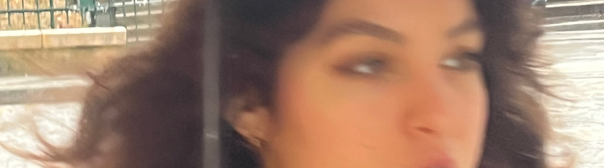
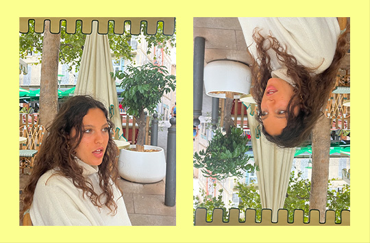
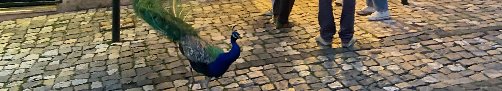

2026
Hey, Szia, Hoi, Hola, Bom dia!
My name is pronounced Ai/ʃ/a. I have good eyes, both theoretically and metaphorically. I like observing people, collecting details, and paying attention to things that are easy to miss.

I have spent my life writing, drawing, filming, photographing, and finding different ways to give shape to my thoughts. I am endlessly curious and critical (career-wise, in my modest opinion, that’s a good thing). Together, those two traits have become the foundation of how I work and how I see the world.
Everything I
wanted to be:

I think life is about bringing something to the table. As a child, I wanted to be an archaeologist, a food critic, a filmmaker, a writer, and many other things in between.
I never saw those ambitions as contradictions. To me, they were different ways of looking at the world. As things change, I try to change with them. I learn, adapt, reconsider,
and occasionally start over. If something doesn't work out, I either approach it from a different angle or move on in search of a better question.
I have never been interested in staying with an idea simply because I started it. Once something is understood, I find myself looking for the next thing waiting to be unfolded.
That curiosity shapes the way I work. The two moments I enjoy most in any project are the beginning and the end: the brainstorming and the finished piece. What fascinates
me most, however, is everything in between. Sometimes a project develops like the childhood game of whispering a sentence from one person to the next. By the time it
reaches the end, it has transformed into something unexpected. Ideas change, people influence them, accidents happen, and meanings shift. Whether I work alone or with others,
that process of transformation is often the most rewarding part.

Email: aisaszakal@gmail.com
Phone: +31639686580